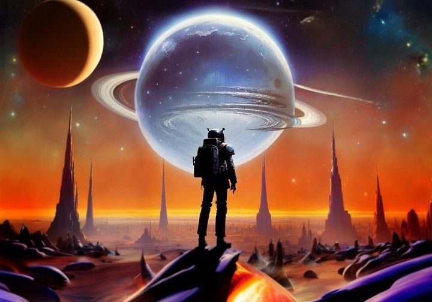
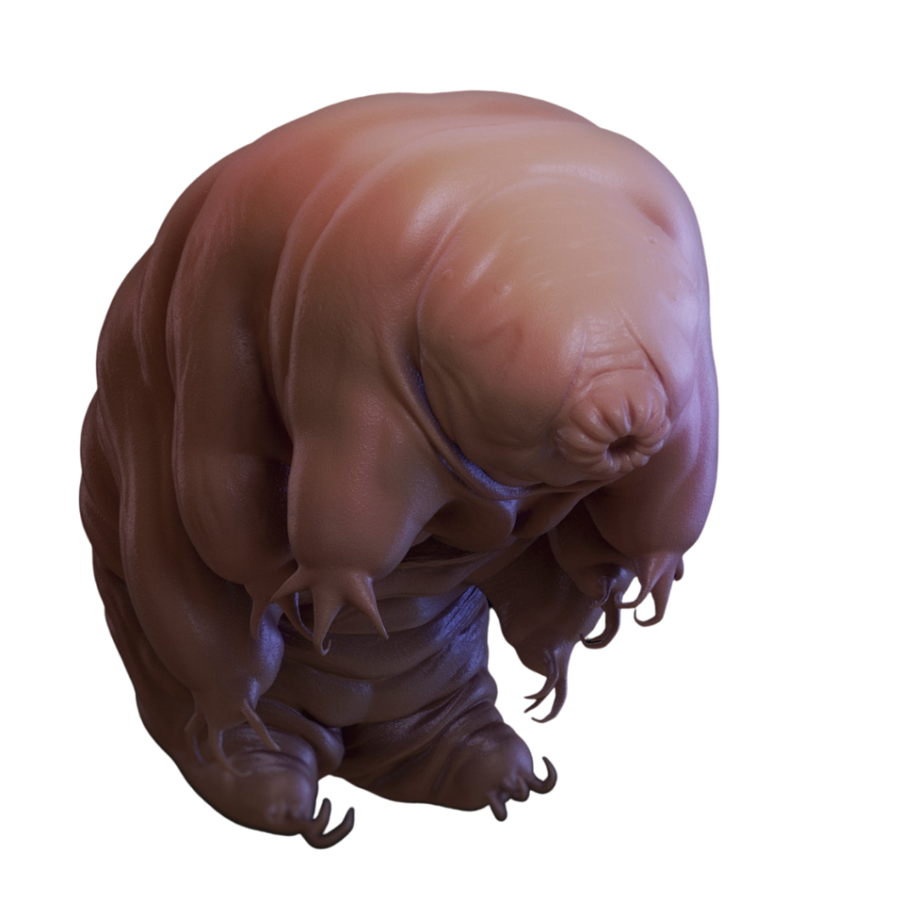

מדענים מצאו לאחרונה קרח מים בקטבים של כוכב חמה, וצוות אחר מצא ראיות אפשריות לאבני הבניין הכימיקלים של החיים מתחת לשטח הסלעי של כוכב חמה
אבל אנחנו צריכים להשאר בעולם בו אנחנו חיים וכי מובן מאליו שכרגע החיים על הכוכב חמה אינם אפשריים מכיוון שהוא דל אטמוספירה(במקום אטמוספירה, לכוכב חמה יש אקסוספירה דקה המורכבת מאטומים המופצים מעל פני השטח על ידי רוח השמש ומטאורואידים פוגעים. האקסוספירה של כוכב חמה מורכבת בעיקר מחמצן, נתרן, מימן, הליום ואשלגן) בנוסף לכך הטמפ' על הכוכב אינם מאפשרים קיום של חיים
כידוע ישנם חיידקים אשר יכולים להשאר בחיים בתנאים אפסיים כמו דובוני הים.הם יכולים לשרוד בטמפ' קיצוניות:151מעלות צלזיוס-273-מעלות צלזיוס.הם גם יכולים לעמוד בתנאי קרינה פי1000 גדולים יותר מכדוה"א.במקרה ותהיתם אז כן הם גם יכולים לשרוד 10שנים ללא מים!
מכאן נובע שאולי בעתיד הקרוב נצליח לשגר את דובוני הים לכוכב חמה והם ישארו שם בחיים ויבנו אוכלוסיה על פני הכוכב.או שהמדע יתפתח עד כדי כך שיבנה יצור חדש שדומה לדובוני הים אך יהיה פי כמה חזק יותר ועמיד יותר מאותם דובוני הים ואולי הוא יצליח לשרוד ולהתרבות על פני הכוכב.לאחר שדובוני הים יצליחו להתקיים על כוכב החמה המדענים יתחילו לחשוב על פתרון שבעזרתו כבר בני האדם יצליחו להתקיים על כוכב חמה אך לצערנו מדובר במדע בדיוני אשר מבוסס רק על השערות.
 